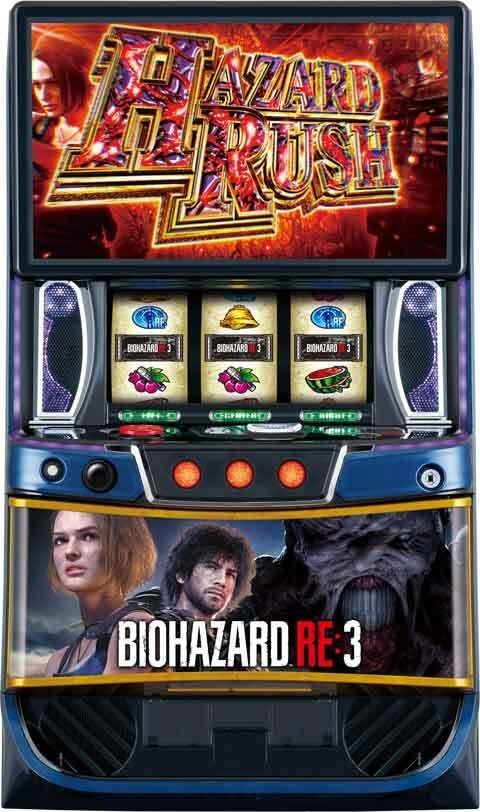
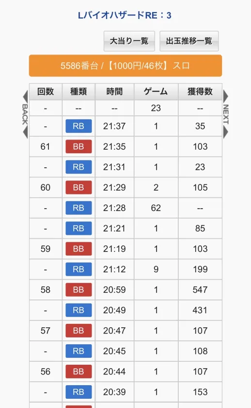
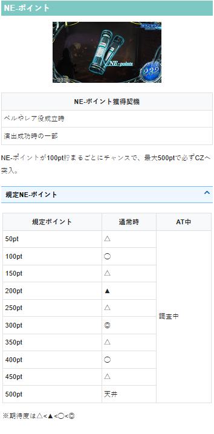
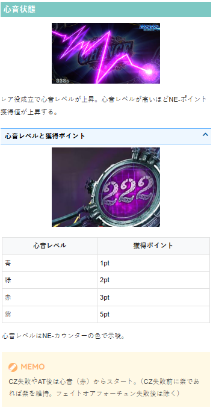
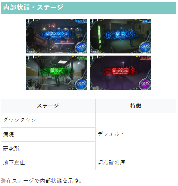
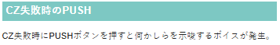

バイオハザードRE:3

【天井情報】
通常時を1000G＋α消化でパンデミックチャンスを経由してATに当選
設定変更時は天井が650G＋αに短縮
NE-ポイント最大500ptでCZ当選
CZ6連続で失敗後、7回目のCZは成功＝AT濃厚
【リセット判別】
不明
【有利区間について】
エンディング等で有利区間をリセットすると、上位ATへのCZ「フェイトオアフォーチュン」に突入。
狙い目
※実ゲーム数天井とは別にNE-ポイント（液晶右側表示、500ptでCZ間天井）があるため、NE-ポイントも考慮してボーダーを調整する。
※上位CZ後はデータ機と液晶のゲーム数が8G前後ずれる。
※CZスルー回数はメニュー画面から確認可能。
【リセット狙い】
※100pt毎に10Gくらいボーダー下げる感じ？
260Gから（0pt想定）
【ゲーム数天井狙い】
※100pt毎に10Gくらいボーダー下げる感じ？
下位AT後
560Gから（0pt想定）
上位AT後
260Gから（0pt想定）
【NE-ポイント狙い（CZ間天井狙い）】
CZ間天井
450ptから
上位後0スルー 0ptからCZ当選まで
※上位後0スルーは50pt天井でCZ当選。
※上位CZ後はデータ機と液晶のゲーム数が8G前後ずれるため、一撃大量獲得後即やめ台は液晶とデータ機のG数のズレを確認した方が良さそう。
100ptソーン
95ptから
300ptゾーン
280ptから
400ptゾーン
395ptから
【CZスルー天井狙い】
積極派 4スルーから
慎重派 5スルーから、または4スルーかつAT間450G以上から
※スルー狙いは下位後、上位後、設定変更後すべて共通。
※慎重派4スルーの狙い目について、設定変更後、上位後はAT間450G以下から打てるため関係ない。
【示唆関連の押し引きについて】
メニュー画面スルー回数表示の色
赤 スルー天井到達濃厚 AT当選まで
緑 スルー天井3回以内 単体では厳しそう？緑出現後1回スルーすればATまで？
心音状態
紫 レア役でのCZ当選率も上がるため、心音レベルが下がるまで打った方が良さそう。
※心音レベルが高いほど、NE-ポイントの獲得ポイントが増える。
CZ失敗時のPUSH
出たボイスでメニュー画面スルー回数表示の色が変わる。
ステージ
地下倉庫ステージは超高確濃厚のためステージ抜けるまで。
【有利区間関連狙い】
同一有利区間差枚 +2000枚以上 CZ当選まで
やめ時
特に続行する要素が無ければ即やめ。
上位後0スルーは50pt天井でCZ当選するため必ずフォロー。
その他
履歴
21:12 RB9G当選 上位CZ成功（上位AT突入）の信号
10G（または11G）以上のRBは通常時CZ当選の信号？
AT当選時はBB（ART等）の信号が上がる
AT中のBB（ART等）1Gの信号はAT中のボーナス当選
上位CZ後はデータ機と液晶のゲーム数が8G前後ずれる。

NE-ポイント

心音状態

内部状態・ステージ

CZ失敗時のPUSH

参考元
かめとうさぎのパチスロブログ
基本情報
- メーカー: エンターライズ
- 機械割: 97.5% 〜 113.1%
- 導入開始日: 2026年05月11日（月）
- ゲーム性概要: ●通常時はレア役や規定ポイント到達からCZに当選 ●CZクリアでボーナスを経由してATへ突入 ●ATは初期ゲーム数40G・純増約1.0枚/G ●AT中はハズレ・規定ポイント・レア役でボーナスを抽選 ●ボーナス当選後はST型のボーナス昇格ゾーン「パンデミックチャンス」へ ●獲得したウイルス数でボーナス性能が変化 ●11回目のボーナスから突入する上位CZ「インフェルノチャンス」成功で上位ATへ ●上位ATは初期ゲーム数60G・純増約6.0枚に強化され、ボーナス当選率がアップ ●上位AT引き戻し期待度は50%オーバー！


打ち方
打ち方・小役
打ち方（小役狙い）
「最初に狙う絵柄」 左リールにBARを狙う。 スイカ停止時を除き、中・右リールはフリー打ちでOKだ。
「スイカ停止時」 中リールに赤7orBARを目安にスイカを狙う。右リールはこぼしがないのでフリー打ちでOK。
「レア役の停止例」
変則押しはNG
押し順ナビなし時は左リール第1停止での消化を推奨する。
解析情報通常時
小役関連
小役確率
| 役 | 確率 |
|---|---|
| リプレイ | 1/8.1 |
| ベル | 1/3.2 |
| 弱チェリー | 1/87.4 |
| 強チェリー | 1/399.6 |
| スイカ | 1/65.5 |
| チャンス目 | 1/399.6 |
※レア役合算確率は1/31.5
内部状態関連
抽選に関わる内部状態
内部状態
通常A＜通常B＜高確＜超高確の4種類
滞在状態でレア役成立時のCZ・AT直撃当選率が変化
通常A～高確はリプレイとレア役で昇格抽選
心音が紫になると 強制的に超高確へ 移行
内部状態昇格率
| 役 | 通常A→通常B | 通常A→高確 | 通常B→高確 |
|---|---|---|---|
| リプレイ | 12.5% | ー | 3.1% |
| スイカ | 50.0% | 25.0% | 33.2% |
| 弱チェリー | 12.1% | 0.4% | 6.3% |
| 強チェリー | 75.0% | 25.0% | 33.2% |
| チャンス目 | 75.0% | 25.0% | 33.2% |
リプレイとレア役で内部状態の昇格を抽選。通常Bと高確移行時は15Gの保障ゲーム数消化後から転落が抽選される。
通常B・高確の保障ゲーム数
| 保障ゲーム数 | 15G |
|---|---|
| 転落契機 | 16G以降のハズレ目で転落抽選 |
※超高確の保障ゲーム数や転落契機は調査中
通常B・高確の平均滞在ゲーム数
| 状態 | ゲーム数 |
|---|---|
| 通常B | 15.5G |
| 高確 | 16.5G |
| 超高確 | 19.8G |
転落後の移行先振り分け
| 移行先 | 通常Bから転落時 | 高確から転落時 |
|---|---|---|
| 通常A | 66.4% | 53.9% |
| 通常B | ー | 12.5% |
| 高確 | ー | ー |
NE-カウンター
NE-カウンター概要
通常時はベルやレア役成立時にNE-ポイント（ポイントは液晶右下のカウンターに表示）を獲得していき、規定ポイント到達でCZに当選。500pt到達で必ずCZに当選する。
NE-カウンター
| ポイント獲得契機 | 小役成立時、演出成功時の一部 |
|---|---|
| 抽選内容 | 規定ポイント到達でCZに突入 ※100の倍数ポイントがチャンス |
| 天井 | 最大500pt到達でCZ濃厚 |
心音状態
レベルは1〜4の4段階で、レベルが高いほどNE-ポイントの獲得率が優遇。 CZ終了後やAT終了後はレベル3（赤）からスタートするが、CZ当選時のレベルが4（紫）だった場合はレベル4が維持される（上位CZ終了後を除く）。
心音レベル
| レベル | NE-ポイントの獲得率 |
|---|---|
| レベル1（青） | 低 |
| レベル2（緑） | ↓ |
| レベル3（赤） | ↓ |
| レベル4（紫） | 高 |
「心音レベル」 液晶右下のNE-カウンターの色で心音レベルが示唆される。
［通常時］規定NE-ポイント振り分け（設定1）
| ポイント | 振り分け |
|---|---|
| 50pt | 0.4% |
| 100pt | 19.5% |
| 150pt | 0.4% |
| 200pt | 6.6% |
| 250pt | 0.4% |
| 300pt | 35.9% |
| 350pt | 0.4% |
| 400pt | 9.8% |
| 450pt | 1.6% |
| 500pt | 25.0% |
50ptごとにCZ当選のチャンスあり。100の倍数ポイントの期待度が高く、ポイント天井は500ptだ。
［ベル］NE-ポイントの獲得量
| 心音レベル | 獲得量 |
|---|---|
| レベル1（青） | 1pt |
| レベル2（緑） | 2pt |
| レベル3（赤） | 3pt |
| レベル4（紫） | 5pt |
［リプレイ・レア役］NE-ポイント獲得率 心音状態：青
| 獲得ポイント | リプレイ | スイカ | 弱チェリー | 強レア役 |
|---|---|---|---|---|
| ＋10pt | 19.6% | 98.4% | 50.0% | ー |
| ＋20pt | 0.2% | 1.2% | 43.8% | 93.8% |
| ＋30pt | 0.1% | 0.4% | 6.3% | 5.5% |
| ＋50pt | ー | ー | ー | 0.4% |
| ＋100pt | ー | ー | ー | 0.4% |
| トータル | 19.9% | 100% | 100% | 100% |
心音状態：緑
| 獲得ポイント | リプレイ | スイカ | 弱チェリー | 強レア役 |
|---|---|---|---|---|
| ＋10pt | 32.7% | 98.4% | 50.0% | ー |
| ＋20pt | 0.4% | 1.2% | 43.8% | 93.8% |
| ＋30pt | 0.1% | 0.4% | 6.3% | 5.5% |
| ＋50pt | ー | ー | ー | 0.4% |
| ＋100pt | ー | ー | ー | 0.4% |
| トータル | 33.2% | 100% | 100% | 100% |
心音状態：赤
| 獲得ポイント | リプレイ | スイカ | 弱チェリー | 強レア役 |
|---|---|---|---|---|
| ＋10pt | 56.3% | 75.0% | 37.5% | ー |
| ＋20pt | 16.4% | 21.9% | 37.5% | ー |
| ＋30pt | 1.8% | 2.3% | 21.9% | 75.0% |
| ＋50pt | 0.3% | 0.4% | 2.7% | 18.8% |
| ＋100pt | 0.3% | 0.4% | 0.4% | 6.3% |
| トータル | 75.0% | 100% | 100% | 100% |
心音状態：紫
| 獲得ポイント | リプレイ | スイカ | 弱チェリー | 強レア役 |
|---|---|---|---|---|
| ＋10pt | ー | ー | ー | ー |
| ＋20pt | 75.0% | ー | ー | ー |
| ＋30pt | 18.8% | 75.0% | 50.0% | ー |
| ＋50pt | 5.9% | 18.8% | 37.5% | 50.0% |
| ＋100pt | 0.4% | 6.3% | 12.5% | 50.0% |
| トータル | 100% | 100% | 100% | 100% |
心音状態昇格率
| 心音 | リプレイ | 弱レア役 | 強レア役 |
|---|---|---|---|
| 青 | 68.8% | 68.8% | 100% |
| 緑 | 1.6% | 18.8% | 100% |
| 赤 | 0.4% | 6.3% | 50.0% |
| 紫 | ー | ー | ー |
※昇格は1段階ずつ ※心音アップはNE-ポイント獲得時のみ抽選
リプレイとレア役で心音状態の昇格を抽選して、当選時は1段階昇格。緑以上は6GのST型で、7G目以降のベルとハズレ時に転落を抽選する。 リプレイやレア役を引いた場合は、心音状態昇格の有無にかかわらずST6Gが再セット。前兆に移行した場合や前兆が終了した場合にも6Gが再セットされる。
緑以上の平均継続ゲーム数
| 心音 | ゲーム数 |
|---|---|
| 緑 | 15.2G |
| 赤 | 16.8G |
| 紫 | 19.8G |
前兆ステージ
前兆ステージの期待度
| ステージ | 期待度 |
|---|---|
| 解体中ビル | 24.1% |
| 解体中ビル上層 | 95.3% |
| メインシャフト | 100% |
※途中昇格を含む期待度
規定のNE-ポイントに到達すると、前兆ステージへ移行してラストの連続演出でCZの当否を告知。ステージが昇格するほど本前兆に期待できる。
［解体中ビル］
［解体中ビル上層］
［メインシャフト］
「前兆マップ」
前兆マップの基本仕様
1Gに1階ずつ階を上がっていく
ビルの種類は4階＜6階の順に期待度アップ
ビルの初期マップの階数ごとの期待度
| 階数 | 期待度 |
|---|---|
| 4階 | 28.3% |
| 6階 | 73.9% |
チャンスアップ法則
| 階の表示 | 法則 |
|---|---|
| 何もナシ | ● 基本はチャンスアップ非発生 ● チャンスアップ発生で CZ以上濃厚 |
| ???? | ● チャンスアップ発生に期待 ● ????が複数個ある場合、2箇所以上でチャンスアップ非発生なら CZ以上濃厚 |
| !!!! | ● チャンスアップ発生濃厚 ● チャンスアップ非発生で CZ以上濃厚 |
液晶左下のマップは1Gにつき1階ずつ上がっていき、????や!!!!が表示された階ではチャンスアップ発生の可能性あり。
????はチャンスアップ発生に期待できる階だが、発生しないこともある。『同一前兆内の????でチャンスアップなしが2回以上発生』した場合はCZ以上濃厚だ（????が1個しかない場合はチャンスアップ非発生でもフェイクの可能性がある）。
前兆ステージ中の抽選内容
| 前兆種別 | 抽選内容 |
|---|---|
| フェイク前兆中 | 通常時の直撃抽選と同様の数値で、 CZ・ATへの書き換えを抽選 |
| NE-ポイント契機の CZ本前兆中 | 通常時の直撃抽選と同様の数値で、 CZ・AT直撃を抽選 |
| レア役契機のCZ本前兆中 | レア役でATへの昇格を抽選 |
| レア役契機のAT本前兆中 | レア役でATゲーム数の上乗せを抽選 |
NE-ポイント契機のCZ本前兆中にレア役でCZに当選した場合、レア役で当選した分を先に放出。CZ終了後にNE-ポイント契機のCZが放出される（最初のCZでAT当選→有利区間をリセットした場合を除く）。
AT直撃に当選した場合は、AT突入後にCZの本前兆が始まる（AT中のCZになる）。
レア役契機のCZ本前兆中・AT昇格当選率
| 役 | 当選率 |
|---|---|
| 弱レア役 | 0.4% |
| 強レア役 | 12.5% |
レア役契機のAT本前兆中・ATゲーム数上乗せ当選率
| 役 | 当選率（上乗せ＋10G） |
|---|---|
| 弱レア役 | 0.4% |
| 強レア役 | 100% |
レア役でATに直撃した場合、NE-ポイントは消費されない（規定ポイントも通常時のものをAT中へそのまま引き継ぐ）。
ネメシスバトル（CZ）
CZ概要
小役入賞でネメシスのHPを削っていく、バトル型のCZ。1Gごとに切り替わるアイコンの種類で与えるダメージの期待度が変化する。
CZ性能
| 当選契機 | 規定NE-ポイント到達時 |
|---|---|
| 継続ゲーム数 | 8G＋α （デンジャーアイコンでハズレを引くと終了） |
| 消化中の抽選 | 小役とアイコンを参照してダメージを抽選、 最終的な残りHP量でATの当否をジャッジ |
| AT期待度 | 約37% |
| 備考 | 完全勝利でパンデミックチャンス濃厚 |
CZ確率＆成功期待度（設定1）
| 確率 | 1/143.3 |
|---|---|
| 成功期待度 | 約37% |
「アイコン」 液晶左下には保留のような形でアイコンが表示されていて、小役を引くとアイコンに応じた攻撃やアイテムを獲得。
おもなアイコンの種類と効果
| アイコン | 効果 |
|---|---|
| 武器 | 当該武器で攻撃 |
| ミッション | ゲーム数ホールドなど、さまざまな効果が発動 |
| サプライケース | 当該ゲームの武器がショットガン以上に変化 |
| パニックチャンス | 一撃勝利!? |
| デンジャー | 小役入賞でCZ継続、ハズレでジャッジへ |
「完全勝利」 基本的にはジャッジ時のネメシスの残りHPを参照してATを抽選するが、ネメシスのHPを0にできれば完全勝利。 完全勝利時はパンデミックチャンスを経由してボーナスへ突入する。
アイコンごとの効果
| アイコン | 小役入賞時の効果 |
|---|---|
| ハンドガン | 1ダメージ |
| ショットガン | 3ダメージ |
| グレネードランチャー | 5ダメージ |
| マグナム | 10ダメージ |
| パニックチャンス | 勝利濃厚 |
| アタック | 1or3or5or10ダメージから抽選 |
| ウェポンセレクト | 成立役に応じてダメージを決定（1ダメージ以上） |
| カルロスミッション | 1ダメージ＋カルロスが4G間参戦、 参戦中は与ダメージ＋1に加えデンジャーを回避 |
| バレルミッション | 5ダメージ以上 |
| ジェネレーター ミッション | 1ダメージ＋アイコンが4G間ホールド、 ホールド中はウェポンセレクトと同じ抽選 |
| サプライケース | 当該アイコン到達時にショットガン以上に変化 |
| デンジャー | 小役で回避、ハズレでジャッジへ |
ウェポンセレクトの与ダメージ
| 役 | ダメージ |
|---|---|
| ハズレ | 1ダメージ |
| ベル・リプレイ | 3ダメージ |
| 弱レア役 | 5ダメージ |
| 強レア役 | 10ダメージor勝利 |
［攻撃一覧］
残りHP別・AT当選率
| 残りHP（ゲージ色） | 当選率 |
|---|---|
| 30～28（白） | 44.0% |
| 27～21（青） | 8.0% |
| 20～14（黄） | 13.1% |
| 13～7（緑） | 44.1% |
| 6～1（赤） | 81.0% |
緑ゲージはチャンス、赤なら激アツだ。
［ゲージの色］ 緑ゲージまで削ればファイナルジャッジの色が緑になるなど、ゲージ量とタイトルの色がリンクしている。
出現アイコン振り分け
| アイコン | 1～8マス目 | デンジャーの 次のマス | 9マス目以降 （※） |
|---|---|---|---|
| ハンドガン | 34.7% | ー | 26.6% |
| ショットガン | 15.8% | 23.7% | 8.8% |
| グレネードランチャー | 1.6% | 5.0% | 0.4% |
| マグナム | 0.1% | 0.1% | 0.1% |
| パニックチャンス | ー | 0.1% | 0.1% |
| アタック | 26.1% | 28.8% | 15.9% |
| ウェポンセレクト | 3.5% | 6.6% | 1.8% |
| カルロスミッション | 2.3% | 2.9% | 1.4% |
| バレルミッション | 1.6% | 5.2% | 0.6% |
| ジェネレーターミッション | 0.8% | 1.2% | 0.4% |
| サプライケース | 13.4% | 26.4% | 6.6% |
| デンジャー | ー | ー | 37.5% |
※デンジャーの次のマスを除く
8マス目まではデンジャーアイコン出現の可能性ナシ。デンジャーアイコンが2マス連続して出現することもない。
サプライケースの中身振り分け
| アイコン | 振り分け |
|---|---|
| ハンドガン | ー |
| ショットガン | 25.6% |
| グレネードランチャー | 12.4% |
| マグナム | 0.6% |
| パニックチャンス | 0.4% |
| アタック | ー |
| ウェポンセレクト | 25.8% |
| カルロスミッション | 16.2% |
| バレルミッション | 13.5% |
| ジェネレーターミッション | 5.4% |
| サプライケース | ー |
| デンジャー | ー |
追撃抽選
レア役成立時は追撃発生の可能性あり。追撃時は3以上のダメージを追加で与える。
追撃当選時の振り分け
| 追撃 | 弱レア役 | 強レア役 |
|---|---|---|
| グレネード（青） | 99.6% | ー |
| グレネード（赤） | ー | 99.6% |
| ロケットランチャー | 0.4% | 0.4% |
追撃時の与ダメージ
| 追撃 | ダメージ |
|---|---|
| グレネード（青） | 3ダメージ |
| グレネード（赤） | 10ダメージ |
| ロケットランチャー | 勝利濃厚 |
［敗北時］勝利書き換え当選率
| 役 | 当選率 |
|---|---|
| 弱レア役 | 12.5% |
| 強レア役 | 100% |
［勝利時］ATゲーム数上乗せ当選率
| 役 | 当選率（＋10G） |
|---|---|
| 弱レア役 | 0.4% |
| 強レア役 | 100% |
ジャッジパート中のレア役では、内部的に敗北の場合は勝利への書き換えを、勝利の場合はATゲーム数上乗せを抽選する。
CZ・AT抽選
CZ当選率（設定1）
| 内部状態 | 弱レア役 | 強レア役 |
|---|---|---|
| 通常A | 0.4% | 12.1% |
| 通常B | 0.4% | 16.4% |
| 高確 | 6.3% | 49.6% |
| 超高確 | 25.0% | 87.5% |
内部状態に応じてCZ当選率が変化。高確以上で強レア役を引けるかがポイントだ。
CZ・AT当選率
AT直撃当選率
| 内部状態 | 弱レア役 | 強レア役 |
|---|---|---|
| 通常A | ー | 0.4% |
| 通常B | ー | 0.4% |
| 高確 | ー | 0.4% |
| 超高確 | ー | 12.5% |
強レア役でAT直撃を抽選。高確以下での当選率は低いので、直撃した場合は超高確に滞在していた可能性が高い。
フリーズ
ナイトメアフリーズ性能
| 恩恵 | プレミアムパンデミックボーナス＋AT |
|---|---|
| 期待枚数 | 約1850枚 |
プレミアムインフェルノフリーズ
ナイトメアフリーズ中に再びフリーズすると、プレミアムインフェルノフリーズへ派生する。
プレミアムインフェルノフリーズ性能
| 恩恵 | プレミアムパンデミックボーナスリバース＋上位AT |
|---|---|
| 期待枚数 | 約3500枚 |
解析情報ボーナス時
ハザードラッシュ（AT）
AT概要
AT自体の純増は高くないので、レア役やCZ成功などで当選するボーナスをどれだけ引けるかが出玉増加の鍵。 AT中にもNE-ポイントが存在し、規定ポイントに到達すればCZに当選する。
AT性能
| 突入契機 | CZ成功時、通常時の直撃抽選 |
|---|---|
| 初期ゲーム数 | 40G＋α |
| 1Gあたりの純増 | 約1.0枚 |
| 消化中の抽選 | NE-ポイント獲得、ステージアップ、 ボーナス、ナイトメアゾーン |
| ボーナス確率 | 約1/60 |
成立役ごとのおもな抽選
| 役 | 抽選 |
|---|---|
| ベル | NE-ポイント獲得 |
| リプレイ | ステージアップ抽選 （最上位ステージでは規定回数成立でボーナス当選） |
| ハズレ5回orレア役 | ボーナスorナイトメアゾーン抽選 |
「ハズレカウンター」 ハズレ時は液晶左下のハズレカウンターが1個点灯。5個点灯（ハズレを5回）するとボーナスやナイトメアゾーンが抽選される。 5個点灯時はカウンターの中央に出現するアイコン・文字の種類で期待度が変化する。
「NE-カウンター」 ベルでポイントを獲得していき、規定ポイント到達でCZに当選。 獲得ポイントは通常時・AT間で引き継がれる。
「ステージ」 滞在ステージに応じてボーナス期待度が変化。 リプレイ成立時にステージアップの可能性があり、最上位ステージ（脱出路）到達後にリプレイが規定回数成立するとボーナスに当選する。
ナイトメアゾーン
5G継続のボーナス高確率ゾーン。 狙え発生時にハザード目が止まればボーナス濃厚だ。
ナイトメアゾーン性能
| 突入契機 | ハズレ5回時やレア役での抽選 （上位AT中はハズレ1回で抽選） |
|---|---|
| 初期ゲーム数 | 5G |
| 消化中の抽選 | ハザード目が止まればボーナス |
| ボーナス期待度 | 約65% |
ハザード目確率
| 役 | 抽選値 |
|---|---|
| フェイク | 1/14.1 |
| ハザード目 | 1/6.3 |
| 強ハザード目 | 1/4096.0 |
| 狙えカットイン合算 | 1/4.3 |
| 狙えカットイン時の （強）ハザード目停止期待度 | 約68% |
※強ハザード目（紫7がひし形）停止でボーナス＋裏パンデミックチャンス突入
ATレベル振り分け
| レベル | 振り分け |
|---|---|
| レベル1 | 33.2% |
| レベル2 | 65.2% |
| レベル3 | 1.6% |
3種類のATレベルがあり、レベルによってAT開始時（ボーナス終了時）のモード振り分けが変化する。
ATレベル別・モード振り分け
| モード | レベル1 | レベル2 | レベル3 |
|---|---|---|---|
| 通常A | 87.5% | 46.6% | ー |
| 通常B | 11.7% | 48.6% | 64.9% |
| 高確 | 0.4% | 4.4% | 28.1% |
| 超高確 | 0.4% | 0.4% | 7.0% |
ATレベル3はつねに通常B以上となるため、病院以上スタートが頻発するとATレベル3に期待できる。
ステージアップ抽選
「ステチェンルーレット演出」
ステージアップまでのリプレイ回数振り分け
| リプレイ回数 | 振り分け | ステチェンルーレット演出 発生時の期待度 |
|---|---|---|
| 1回 | 0.7% | 100% |
| 2回 | 0.7% | 100% |
| 3回 | 0.7% | 100% |
| 4回 | 41.4% | 38.3% |
| 5回 | 0.7% | 100% |
| 6回 | 0.7% | 65.1% |
| 7回 | 31.1% | 41.4% |
| 8回 | 0.7% | 62.2% |
| 9回 | 0.7% | 100% |
| 10回 | 22.7% | 100% |
最大でリプレイを10回引くとステージがアップ。最上位の脱出路ステージでステージアップに当選した場合はボーナス濃厚だ。 ステージアップの際は基本的にステチェンルーレット演出が発生する。
ステチェンルーレット演出の法則
フェイクの可能性があるのは4・6・7・8回目のリプレイ時のみ、 その他の回数のリプレイで発生時は成功（ステージアップ）濃厚
※前兆中を除く
ボーナス・ナイトメアゾーン当選率 通常A滞在時
| 契機 | ボーナス | ナイトメアゾーン | トータル |
|---|---|---|---|
| ハズレ5回 | 1.2% | 2.5% | 3.7% |
| 弱レア役 | 7.0% | 5.5% | 12.5% |
| 強レア役 | 37.5% | 62.5% | 100% |
通常B滞在時
| 契機 | ボーナス | ナイトメアゾーン | トータル |
|---|---|---|---|
| ハズレ5回 | 4.7% | 9.2% | 13.9% |
| 弱レア役 | 12.5% | 8.6% | 21.1% |
| 強レア役 | 43.8% | 56.2% | 100% |
高確滞在時
| 契機 | ボーナス | ナイトメアゾーン | トータル |
|---|---|---|---|
| ハズレ5回 | 15.9% | 22.1% | 38.0% |
| 弱レア役 | 29.3% | 20.7% | 50.0% |
| 強レア役 | 50.0% | 50.0% | 100% |
超高確滞在時
| 契機 | ボーナス | ナイトメアゾーン | トータル |
|---|---|---|---|
| ハズレ5回 | 22.1% | 26.7% | 48.8% |
| 弱レア役 | 37.5% | 25.0% | 62.5% |
| 強レア役 | 100% | ー | 100% |
滞在状態に応じて、ハズレ5回やレア役成立時のボーナス・ナイトメアゾーン当選率が変化。 ナイトメアゾーンの本前兆中はボーナスへの昇格を、ボーナスの本前兆中はATゲーム数の上乗せが抽選される。
ナイトメアゾーン本前兆中・ボーナスへの昇格当選率
| 契機 | 通常A | 通常B | 高確 | 超高確 |
|---|---|---|---|---|
| ハズレ5回 | 1.2% | 4.7% | 15.9% | 22.1% |
| 弱レア役 | 7.0% | 12.5% | 29.3% | 37.5% |
| 強レア役 | 100% | 100% | 100% | 100% |
［AT中］規定NE-ポイント振り分け（設定1）
| ポイント | 振り分け |
|---|---|
| 50pt | 0.8% |
| 100pt | 30.5% |
| 150pt | 0.8% |
| 200pt | 12.5% |
| 250pt | 0.8% |
| 300pt | 27.3% |
| 350pt | 0.4% |
| 400pt | 9.4% |
| 450pt | 0.4% |
| 500pt | 17.2% |
※通常時にレア役契機でATに当選した場合は通常時のポイントを引き継ぐ
AT中ネメシスバトル（CZ）
AT中のCZ
AT中も規定NE-ポイント到達でCZに当選。 アイコンと小役でネメシスのHPを削っていくゲーム性は通常時と共通だが、AT中はベルナビが発生するので勝利期待度が約75%と大幅に高くなっている。
AT中CZ性能
| 当選契機 | 規定NE-ポイント到達時 |
|---|---|
| 継続ゲーム数 | 8G＋α （デンジャーアイコンでハズレを引くと終了） |
| 消化中の抽選 | 小役とアイコンを参照してダメージを抽選、 最終的な残りHP量でボーナスをジャッジ |
| ボーナス期待度 | 約75%（上位AT中は約98%） |
上位AT中は15枚ベルもナビされるため、ハズレの出現頻度が低く、終了しづらいため約98%で勝利する。
CZ確率＆成功期待度（設定1）
| 状態 | 確率 | ボーナス期待度 |
|---|---|---|
| AT中 | 1/222.8 | 約75% |
| 上位AT中 | 1/122.6 | 約98% |
パンデミックチャンス
パンデミックチャンス概要
AT中のボーナス当選後は、パンデミックチャンスでボーナス種別を決定する。 初期7G（報酬7個）の減算型ST方式で、リプレイorレア役を引くと表示されたアイコンの報酬を獲得してSTをリセット。 一度獲得した報酬は消えていくので、1回成功後は6G（報酬6個）、2回成功後は5G（報酬5個）のように、STゲーム数と報酬が減算されていく。 すべての報酬を獲得orゲーム数消化（報酬非獲得）で終了になり、ボーナスへ移行する。
パンデミックチャンス性能
| 当選契機 | 通常時のCZ完全勝利後、AT中のボーナス当選後 |
|---|---|
| 継続ゲーム数 | 初期7GのST型 （報酬獲得のたびに1Gずつ減っていく） |
| 消化中の抽選 | リプレイ・レア役成立で報酬獲得、 全報酬獲得orゲーム数消化でボーナスへ |
| 備考① | ハザード目停止で＋Mウィルス獲得 |
| 備考② | ボーナス11回目以降はインフェルノチャンスへ |
パンデミックチャンス突入時の一部で「裏パンデミックチャンス」に突入する。
ハザード目確率
| 役 | 確率 |
|---|---|
| ハザード目 | 1/44.0 |
| 強ハザード目 | 1/19575 |
| トータル | 1/43.9 |
※いずれかのウィルスが表示されているゲームかつ、＋Mウィルス未獲得時
「報酬の種類」
報酬の種類
| アイコン | 効果 |
|---|---|
| ゲーム数 | ATゲーム数上乗せ |
| ＋Gウィルス | 15枚ベルでATゲーム数上乗せ抽選 |
| Dウィルス | 増殖確率大幅アップ |
| Sウィルス | 7揃い（ボーナス1G連）確率大幅アップ |
| ＋Mウィルス | ハザード目停止でボーナス枚数を上乗せ |
「報酬獲得」 リプレイ・レア役で報酬獲得、報酬の並びは複数パターン存在する（ATゲーム数上乗せ4個とウィルス3個）。 前作「パチスロ バイオハザード RE:2」とは異なり、すべてのマスを必ず消化できるのが大きな特徴だ。
「ハザード目停止で＋Mウィルス獲得」 ウィルスマス時は中リール狙えが発生する可能性あり。ハザード目が止まれば当該マスのウィルスに加えて、＋Mウィルスを獲得できる。 ハザード目停止後、左右リールにも紫7を狙い、紫7がひし形に止まれば…!?
アイコンの配列
アイコンの配列パターンは4種類（ゲーム数上乗せ4つとウィルス3つ）。 ウィルス3つがどの順番で配置されるかも、7種類のパターンが存在する。
ウィルスの配列パターン
| 配列 | 順番（左から順に1～7G目） |
|---|---|
| 配列1 | ◯・ ウィルス ・◯・ ウィルス ・◯・◯・ ウィルス |
| 配列２ | ◯・ ウィルス ・◯・ ウィルス ・◯・ ウィルス ・◯ |
| 配列3 | ◯・◯・ ウィルス ・◯・◯・ ウィルス ・ ウィルス |
| 配列4 | ◯・◯・◯・◯・ ウィルス ・ ウィルス ・ ウィルス |
※◯は上乗せ5G
ウィルスの配置順
| パターン | 順番 |
|---|---|
| パターン1 | ＋G→D→S |
| パターン2 | D→＋G→S |
| パターン3 | ＋G→S→D |
| パターン4 | S→＋G→D |
| パターン5 | D→S→＋G |
| パターン6 | S→D→＋G |
レア役・ゲーム数上乗せ当選率
| 役 | ＋10G | ＋20G |
|---|---|---|
| 弱レア役 | 100% | ー |
| 強レア役 | ー | 100% |
パンデミックチャンス開始画面を含め、レア役成立時は必ず追加でATゲーム数を上乗せ。 ウィルス3つ目をレア役で獲得した場合は、上乗せゲーム数が告知されず後乗せに回る。
裏パンデミックチャンス
パンデミックチャンスの一部で突入。 通常のパンデミックチャンスと異なり、ベルでもアイコンを獲得できる。
裏パンデミックチャンス当選率
| 契機 | 当選率 |
|---|---|
| ボーナス当選時 | 0.4% |
アイコンの獲得告知タイミング割合 上乗せ獲得時
| 役 | 割合 |
|---|---|
| リプレイ・ベル | 第3停止時：100% |
| 下段BARからのチャンス目 | 第3停止時：100% |
| その他のレア役 | 第1停止時：100% |
ウィルス獲得時：獲得済みウィルスが1個以下
| 役 | 割合 |
|---|---|
| リプレイ・ベル | レバーON時：約80% 第3停止時：約20% |
| 下段BARからのチャンス目 | 第3停止時：100% |
| その他のレア役 | レバーON時：100% （レア役ナビ発生） |
ウィルス獲得時：獲得済みウィルスが2個
| 役 | 割合 |
|---|---|
| リプレイ・ベル | レバーON時：約50% 第3停止時：約50% |
| 下段BARからのチャンス目 | 第3停止時：100% |
| その他のレア役 | レバーON時：100% （レア役ナビ発生） |
※ベルでのアイコン獲得は裏パンデミックチャンス時のみ
インフェルノチャンス
インフェルノチャンス概要
AT中にボーナスを10回獲得すると、次のボーナスからパンデミックチャンスではなくインフェルノチャンスへ突入。 インフェルノチャンス成功で上位ATへ移行。失敗時はボーナスを経由してATへ戻る。
インフェルノチャンス性能
| 当選契機 | おもにAT中のボーナス11回目以降 |
|---|---|
| 継続ゲーム数 | 初期7GのST型 （報酬獲得のたびに1Gずつ減っていく） |
| 消化中の抽選 | リプレイ・レア役成立で報酬獲得、 Iウィルス獲得で上位ATへ |
「基本のゲーム性はパンデミックチャンスと同じ」 Iウィルスのマスでリプレイorレア役を引けば上位AT。Iウィルス非獲得時はボーナス消化後、通常のATへ戻る。
裏インフェルノチャンス
リプレイ・レア役に加え、ベルでもアイコンを獲得できる上位版のインフェルノチャンスだ。
ボーナス
初当りハザードボーナス
初当り時はボーナスからスタート。約100枚獲得まで継続し、消化中はレア役でATゲーム数の上乗せを抽選する。
初当りハザードボーナス性能
| 当選契機 | CZ成功、直撃抽選当選後 |
|---|---|
| 1Gあたりの純増 | 約4.5枚 |
| 獲得枚数 | 100枚 |
| 消化中の抽選 | ATゲーム数上乗せ抽選 |
AT中ボーナス概要
パンデミックチャンスで獲得したウィルスの種類で、ボーナスの名称と性能が変化。 獲得枚数は基本的に約100枚だが、＋Mウィルス獲得時は枚数上乗せ抽選もおこなわれる。
AT中ボーナス性能
| 当選契機 | AT中の抽選、CZ成功など |
|---|---|
| 1Gあたりの純増 | 約4.5枚 |
| 獲得枚数 | 100枚 |
| 消化中の抽選 | ウィルスに応じたATゲーム数やボーナス1G連抽選、 ＋Mウィルス獲得時はボーナス枚数上乗せ抽選あり |
ボーナスの名称
| PCでの獲得ウィルス | ボーナス |
|---|---|
| ナシ | ハザードボーナス |
| 1個 | パンデミックボーナス |
| 2個 | スーパーパンデミックボーナス |
| 3個 | プレミアムパンデミックボーナス |
| ＋Mウィルス | 各ボーナスの後ろにリバースが付く |
| Iウィルス | エピソードボーナス |
※PC…パンデミックチャンス
獲得ウィルスごとの効果
| アイコン | 効果 |
|---|---|
| ＋Gウィルス | 15枚ベルでATゲーム数上乗せ抽選 |
| Dウィルス | 増殖確率大幅アップ |
| Sウィルス | 7揃い（ボーナス1G連）確率大幅アップ |
| ＋Mウィルス | ハザード目停止でボーナス枚数を上乗せ |
| Iウィルス | エピソードボーナス後、上位ATへ |
※Iウィルスはインフェルノチャンス中のみ獲得の可能性あり
＋Mウィルスは必ずその他のウィルスと複合する形で獲得。ウィルス1個と＋Mウィルス獲得時はパンデミックボーナスリバースのように、各ボーナス名の後ろにリバースが付く。 Iウィルス獲得後はエピソードボーナスを経由して、上位ATへ移行する。
［ハザードボーナス］
［パンデミックボーナス］
［スーパーパンデミックボーナス］
［プレミアムパンデミックボーナス］
［パンデミックボーナスリバース］
［エピソードボーナス］
＋Gウィルス獲得時の抽選
レア役だけでなく、15枚ベル成立時にもATゲーム数上乗せが抽選される。
Sウィルス獲得時の抽選
赤7揃い（ボーナス1G連）確率が大幅にアップする。
Dウィルス獲得時の抽選
ATゲーム数上乗せ時や赤7揃い時の増殖確率がアップ。最大で4段階まで増殖する可能性がある。
＋Mウィルス獲得時の抽選
ハザード目停止でボーナスの枚数を上乗せ！
フェイトオアフォーチューン（上位CZ）
上位CZ概要
エンディング後・上位AT後に必ず移行し、50%以上で上位ATを獲得する。
上位CZ性能
| 当選契機 | エンディング後、上位AT後 |
|---|---|
| 継続ゲーム数 | 8G |
| 消化中の抽選 | 成立役に応じた上位AT抽選 |
| 成功期待度 | 50%以上 |
ハザードラッシュインフェルノ（上位AT）
上位AT概要
初期ゲーム数60G、純増が約4.5枚/Gにアップした上位AT。 基本的なゲームの流れは通常ATと同じだが、15枚ベルがナビされるためNE-ポイントの獲得率がアップ、ハズレは5回ではなく1回で各種抽選がおこなわれるなど、性能が大幅に上昇している。 また、ネメシスバトル（CZ）成功率も約98%とかなり高い。
上位AT性能
| 当選契機 | 上位CZ成功後、ロングフリーズ後 |
|---|---|
| 初期ゲーム数 | 60G |
| 1Gあたりの純増 | 約4.5枚 |
| 消化中の抽選 | NE-ポイント獲得、ステージアップ、 ボーナス、ナイトメアゾーン |
| ボーナス確率 | 約1/56 |
成立役ごとのおもな抽選
| 役 | 抽選 |
|---|---|
| ベル | NE-ポイント獲得 |
| リプレイ | ステージアップ （最上位ステージでは規定回数成立でボーナス当選） |
| ハズレ1回orレア役 | ボーナスorナイトメアゾーン抽選 |
ボーナス・ナイトメアゾーン当選率 通常A滞在時
| 契機 | ボーナス | ナイトメアゾーン | トータル |
|---|---|---|---|
| ハズレ1回 | 1.2% | 2.5% | 3.7% |
| 弱レア役 | 7.0% | 5.5% | 12.5% |
| 強レア役 | 37.5% | 62.5% | 100% |
通常B滞在時
| 契機 | ボーナス | ナイトメアゾーン | トータル |
|---|---|---|---|
| ハズレ1回 | 4.7% | 9.2% | 13.9% |
| 弱レア役 | 12.5% | 8.6% | 21.1% |
| 強レア役 | 43.8% | 56.2% | 100% |
高確滞在時
| 契機 | ボーナス | ナイトメアゾーン | トータル |
|---|---|---|---|
| ハズレ1回 | 15.9% | 22.1% | 38.0% |
| 弱レア役 | 29.3% | 20.7% | 50.0% |
| 強レア役 | 50.0% | 50.0% | 100% |
超高確滞在時
| 契機 | ボーナス | ナイトメアゾーン | トータル |
|---|---|---|---|
| ハズレ1回 | 22.1% | 26.7% | 48.8% |
| 弱レア役 | 37.5% | 25.0% | 62.5% |
| 強レア役 | 100% | ー | 100% |
ナイトメアゾーン本前兆中・ボーナスへの昇格当選率
| 契機 | 通常A | 通常B | 高確 | 超高確 |
|---|---|---|---|---|
| ハズレ1回 | 1.2% | 4.7% | 15.9% | 22.1% |
| 弱レア役 | 7.0% | 12.5% | 29.3% | 37.5% |
| 強レア役 | 100% | 100% | 100% | 100% |
ボーナス本前兆中・ATゲーム数上乗せ当選率
ハズレ5回がハズレ1回で抽選されるようになっていること以外、抽選値は通常のAT中と共通だ。
［上位AT中］規定NE-ポイント振り分け（設定1）
| ポイント | 振り分け |
|---|---|
| 50pt | 0.4% |
| 100pt | 25.0% |
| 150pt | 0.4% |
| 200pt | 7.8% |
| 250pt | 0.4% |
| 300pt | 19.9% |
| 350pt | 0.4% |
| 400pt | 9.4% |
| 450pt | 0.4% |
| 500pt | 35.9% |
フェイトオアフォーチューン（上位CZ）経由での上位AT当選時は、初回の規定NE-ポイントが50ptになる。 50ptになるパターンはあくまでも上位CZを経由した場合なので、インフェルノチャンス成功後は50pt確定ではない。
演出情報
通常時
ステージの示唆
| ステージ | 示唆 |
|---|---|
| ダウンタウン | デフォルト |
| 病院 | デフォルト |
| 研究所 | デフォルト |
| 地下倉庫 | 超高確示唆 |
［ダウンタウン］
［病院］
［研究所］
［地下倉庫］
［ダウンタウン］リプレイorレア役濃厚演出
| カット | 演出 |
|---|---|
| カット1 | ビルの屋上が炎上 |
| カット2 | パトカーのライトが点灯 |
| カット3 | チャーリーくん人形の頭がライトアップ |
| カット4 | 発電機が出現 |
| カット5 | 通気口から謎の液体 |
| カット6 | LED看板が明滅 |
| カット7 | マネキンが増える |
| カット8 | ダクトから気体が漏れる |
| カット9 | 消火栓から水が噴射 |
［病院］リプレイorレア役濃厚演出
| カット | 演出 |
|---|---|
| カット1 | 自動販売機が明滅 |
| カット2 | パソコンモニターが起動 |
| カット3 | 支柱が倒れている |
| カット4 | ライトが明滅 |
| カット5 | ライトが明滅 |
| カット6 | モニターが起動 |
| カット7 | 落雷 |
| カット8 | ぬいぐるみが置いてある |
| カット9 | ぬいぐるみが置いてある |
［研究所］リプレイorレア役濃厚演出
| カット | 演出 |
|---|---|
| カット1 | サイレンが点灯 |
| カット2 | サイレンが点灯 |
| カット3 | パソコンモニターが起動 |
| カット4 | ライトが明滅 |
| カット5 | サイレン点灯 |
| カット6 | ライトが明滅 |
| カット7 | 怪しい鉄板がぶら下がっている |
通常時は1Gごとにカットが切り替わりながら進行。各カットにいわゆる違和感のような背景系演出が隠されていて、発生＝リプレイorレア役が濃厚となる。
［ビルの屋上が炎上］
［チャーリーくん人形の頭がライトアップ］
［ステージ共通］演出法則
| 演出 | 法則 |
|---|---|
| ゾンビのうめき声 | リプレイorレア役濃厚 |
| ネメシスの叫び声 | リプレイorレア役かつ、CZ当選以上濃厚 |
| 木箱出現 | リプレイorレア役濃厚かつ、 その他演出非発生時は次のゾーンがチャンス （規定ポイントまで残り100pt以内示唆） |
| ハーブ出現 | リプレイorレア役濃厚、 その他演出発生で心音状態昇格濃厚 |
| 光るアイテム出現 | 演出発生orステージチェンジ示唆 |
| ノイズ発生 | エピソード擬似連濃厚（CZ以上濃厚） |
［ハーブ出現］
［光るアイテム出現］
演出法則
「トランシーバ演出」
トランシーバ演出の示唆
| パターン | 示唆 |
|---|---|
| 「警戒」を含むセリフ | 規定ポイントまで100pt以内に期待 |
| 「近い」を含むセリフ | 規定ポイントまで100pt以内濃厚 |
「警戒」や「近い」の文字は黄色で表示されるので、見た目でも気づきやすい。
「手記演出：メモ」
「手記演出：本」
手記演出の示唆
| パターン | 示唆 |
|---|---|
| メモ | ● デフォルトパターン ● 青文字は心音状態昇格濃厚 |
| メモ：汚れ大 | ● 前兆中示唆 ● 緑文字や赤文字はCZ以上濃厚 |
| 本 | ● メモより心音状態昇格期待度が高い ● 青文字は心音状態昇格濃厚 |
| 本：汚れ小 | ● 規定ポイント示唆 ● 紫文字は継続ゲーム数が長いほどチャンス ● 紫文字で1G：400pt以下 ● 紫文字で2G継続：300pt以下 ● 紫文字で3G継続：200pt以下 |
| 本：汚れ大 | ● 前兆中示唆 ● 緑文字や赤文字はCZ以上濃厚 |
メモや本の汚れが大きいとチャンス。
「クリーチャーバトル演出」 おもに心音状態昇格や規定ポイントを示唆する演出。最大で3G継続する可能性あり。
クリーチャーバトル演出の示唆
| クリーチャー | 示唆 |
|---|---|
| 男ゾンビ | デフォルト |
| 女ゾンビ＆男ゾンビ | NE-ポイント獲得期待度アップ |
| 女ゾンビ＆女ゾンビ | NE-ポイント獲得or心音状態昇格、 規定ポイント400pt以下 |
| NE-αゾンビ | NE-ポイント獲得or心音状態昇格 |
| ハンターβ | 前兆示唆 |
| ブラッドゾンビ | AT濃厚 |
クリーチャーバトル演出が継続した場合の示唆
| パターン | 示唆 |
|---|---|
| クリーチャー接近 | 2～3G目に接近した場合は心音状態昇格 |
| キャラ攻撃 | 1G目から攻撃した場合は撃破or継続 |
| ショットガン | レア役or心音状態昇格 |
プレ前兆演出のCZ以上当選期待度
| 演出 | 期待度 |
|---|---|
| 手記 | 27.4% |
| ミハイル会話 | 31.7% |
| タイレル移動 | 32.9% |
| クリーチャー | 55.7% |
| ガレージ前通路・2F廊下・第一研究室（※） | 66.5% |
| エピソード擬似連 | 100% |
| 移行扉：赤 | 100% |
| ブラッドゾンビ | 100% |
※滞在ステージで変化
規定のNE-ポイント到達時はプレ前兆が発生し、ミッションや前兆ステージへ移行する。
［手記］
［ミハイル会話］
［タイレル移動］
［クリーチャー］
［第一研究室］ チャンスとなる部屋は滞在ステージによって変化する。
［エピソード擬似連］
［移行扉：赤］
［ブラッドゾンビ］
ミッション演出期待度
| 演出 | 期待度 | 即ビル発展時の期待度 |
|---|---|---|
| VSドレインディモス | 2.2% | 95.5% |
| VSリッカー | 10.4% | 50.9% |
| VSハンターγ | 15.2% | 66.8% |
| VSゾンビ犬 | 32.1% | 81.0% |
ミッション演出失敗後、即ビルに発展（前兆ステージへ移行）すれば本前兆の期待度大幅アップ！
［VSドレインディモス］
［VSリッカー］
［VSハンターγ］
［VSゾンビ犬］
連続演出期待度
| 連続演出 | 期待度 |
|---|---|
| RUNAWAY JUDGE | 8.1% |
| COOPERATE JUDGE（ゾンビ） | 17.2% |
| COOPERATE JUDGE（ハンターβ） | 50.3% |
| CRISIS JUDGE | 95.4% |
［RUNAWAY JUDGE］ 期待度の低い連続演出だが、チャンスアップ発生でCZ以上の期待大！
［CRISIS JUDGE］
CZ関連
小役成立期待度
| 演出 | 通常時 | AT中 | 上位AT中 |
|---|---|---|---|
| 無演出 | 19.1% | 24.9% | 89.5% |
| 画面実体化あおり | 40.2% | 48.5% | 96.0% |
| ナビランプ点灯 | 50.2% | 58.6% | 97.3% |
| 小型ウインドウあおり | 80.8% | 85.5% | 99.4% |
| シャッター | 100% | 100% | 100% |
| 予告音 | 100% | 100% | 100% |
演出の特徴
| 演出 | 特徴 |
|---|---|
| 画面実体化あおり | 青パターンは小役以上濃厚 |
| シャッター | 手形付きのシャッターはレア役以上濃厚、 赤シャッターは強レア役以上濃厚 |
| 予告音 | その他の演出と複合した場合はレア役or勝利濃厚 |
［画面実体化あおり］
［小型ウインドウあおり］
［手形付きシャッター］
［赤シャッター］
ジャッジ演出成功期待度
| ゲージ色 | 逃走ルート | バトルルート | トータル |
|---|---|---|---|
| 白 | 43.8% | 100% | 44.0% |
| 青 | 8.4% | 100% | 8.0% |
| 黄 | 13.3% | 100% | 13.1% |
| 緑 | 38.3% | 約86% | 44.1% |
| 赤 | 77.1% | 約97% | 81.0% |
CZのジャッジ演出は逃走ルート＜バトルパートの2種類で、黄以下でバトルルートに発展した場合は成功濃厚だ。
［逃走ルート］
［バトルルート］
ボーナス関連
7を狙えカットイン期待度
| 色 | Sウィルスなし | Sウィルスあり | PPB中 |
|---|---|---|---|
| 青 | 53.4% | 21.5% | 32.8% |
| 赤 | 93.6% | 100% | 100% |
| 紅葉柄 | 100% | 100% | 100% |
| 紫 | 100% | 100% | 100% |
※PPB…プレミアムパンデミックボーナス ※紫カットインは7揃い＆増殖濃厚
［青］
［赤］
［紅葉柄］
［紫］
ハザード目を狙えカットイン期待度
| 色 | PPB以外 | PPB中 |
|---|---|---|
| 青 | 61.2% | 69.1% |
| 赤 | 100% | 100% |
| 紫 | 100% | 100% |
※PPB…プレミアムパンデミックボーナス
［青］
［赤］ 赤カットインは＋20枚以上、紫カットインは＋30枚以上濃厚だ。
［紫］
その他の演出法則
| 演出 | 法則 |
|---|---|
| クリーチャーナビ | ● ゾンビ犬：チェリー以外で上乗せ濃厚 ● ペイルヘッド：上乗せ濃厚 |
| ナビシャッター | ● 赤：＋20G以上濃厚 ● 金：トータル＋100G以上濃厚 |
| ジル ガンアクション | ● スイカ以外が成立：上乗せ濃厚 ● ハンドガン以外：上乗せ濃厚 ● ロケットランチャー：トータル＋300G以上濃厚 |
| カルロス ガンアクション | ● ＋20G以上濃厚 ● ロケットランチャー：トータル＋300G以上濃厚 |
| ジル＆カルロス ガンアクション | ● 増殖以上濃厚 |
| ネメシスインパクト | ● トータル＋100G以上濃厚 |
| 突PUSH | ● ＋30G以上濃厚 ● 30G未満の場合はトータル＋100G以上濃厚 |
| 職種破壊 | ● 赤：上乗せ濃厚 ● PPB中の赤：＋20G以上濃厚 |
※PPB…プレミアムパンデミックボーナス
［クリーチャーナビ］
［ナビシャッター］
［ジルガンアクション］
［カルロスガンアクション］
［ジル＆カルロスガンアクション］
［ネメシスインパクト］
［突PUSH］
［職種破壊］
AT・上位AT関連
AT中ステージの示唆
| ステージ | 示唆 |
|---|---|
| ダウンタウン | デフォルト |
| 病院 | モードB以上 |
| 研究所 | 高確以上 |
| 脱出路 | 超高確濃厚 |
AT中はステージでボーナス当選期待度が変化。リプレイ成立時にステージアップの可能性がある。
［ダウンタウン］
［病院］
［研究所］
［脱出路］ 脱出路到達後は、規定回数のリプレイ成立でボーナスに当選する。
ハズレカウンターのアイテム別期待度
ハズレ5回（上位AT中はハズレ1回）時は、ハズレカウンター中央に出現するアイテムや文字の色で期待度を示唆する。
ハズレカウンターの期待度表示
| アイテム | 期待度表示パターン |
|---|---|
| 弾丸 | デフォルト |
| ナイフ | デフォルト |
| ハンドガン | 連続演出発展期待度アップ |
| 時計：青 | ボーナス濃厚 |
| 時計：虹 | 裏パンデミックチャンス濃厚 |
| チャンス：青 | ボーナス濃厚 |
| チャンス：緑 | ボーナスorナイトメアゾーン濃厚 |
| チャンス：赤 | ボーナス濃厚 |
アイコンごとの期待度
| アイテム | ボーナス期待度 | ナイトメアゾーン期待度 |
|---|---|---|
| 弾丸 | 1.9% | 3.5% |
| ナイフ | 4.7% | 8.7% |
| ハンドガン | 11.5% | 22.9% |
| 時計：青 | 100% | ー |
| 時計：虹 | 100% | ー |
| チャンス：青 | 100% | ー |
| チャンス：緑 | 41.8% | 58.2% |
| チャンス：赤 | 100% | ー |
演出期待度・法則
| 演出 | 期待度・法則 |
|---|---|
| 狙えカットイン | ● 青：61.4% ● 赤： ボーナス濃厚 ● 金orプレミアム： ボーナス＋裏パンデミックチャンス濃厚 |
| 停止出目 | ● ハザード目： ボーナス濃厚 ● 強ハザード目： ボーナス＋裏パンデミックチャンス濃厚 |
| ハズレカウンター MAX時の演出 | ● ゾンビ：ハズレ ● コングラチュレーション： ボーナス濃厚 |
| その他の演出 | ● 「シャッター演出」と「クリーチャーナビ演出」以外の演出発生でボーナスの大チャンス |
※強ハザード目…紫7がひし形に停止
［狙えカットイン：青］
［狙えカットイン：赤］
［狙えカットイン：金］
［狙えカットイン：プレミアム］ カットイン内のジルがベレー帽を被っているのがプレミアムパターン。
［ハズレカウンター］ ナイトメアゾーン中にハズレカウンターがMAXになった場合、1Gで即結果を告知。 ボーナス当選時はカウンターが虹に光ってコングラチュレーションが表示される。
［シャッター演出］
［クリーチャーナビ演出］
演出期待度・法則
| 演出 | 期待度・法則 |
|---|---|
| 狙えカットイン | ● デフォルト： ハザード目以上停止濃厚 ● 虹： 強ハザード目停止濃厚 |
| 停止出目 | ● ハザード目： 当該ウィルス＆＋Mウィルス獲得濃厚 ● 強ハザード目： 全ウィルス＆＋Mウィルス獲得濃厚 |
※強ハザード目…紫7がひし形に停止
［狙えカットイン：デフォルト］ 狙えカットインが発生した時点でハザード目停止＝＋Mウィルス獲得濃厚。 強ハザード目は当該ウィルスだけでなく、すべてのウィルスを獲得できる（プレミアムパンデミックボーナスリバース）。
［狙えカットイン：虹］
上位AT中のステージの示唆
| ステージ | 示唆 |
|---|---|
| 時計塔前広場レベル1 | デフォルト |
| 時計塔前広場レベル2 | 通常B以上 |
| 時計塔前広場レベル3 | 高確以上 |
| 時計塔前広場レベル4 | 超高確濃厚 |
上位AT中はステージとしては時計塔前広場の1種類。液晶右上のステージ名の色でレベルを示唆している（青＜緑＜赤＜紫）。
［時計塔前広場レベル1］
［時計塔前広場レベル2］
［時計塔前広場レベル3］
［時計塔前広場レベル4］
裏ボタン系
CZ失敗後のCZスルー回数示唆
CZ失敗時にPUSHボタンを押すと、発生するボイスでCZのスルー回数天井を示唆する。
CZ失敗後の裏ボタン・ボイスでのスルー回数天井示唆
| ボイス | 示唆 |
|---|---|
| ジル「ここまでね」 | デフォルト |
| ジル「どこまでも追ってくる」 | 残り3回以内示唆 |
| カルロス「諦めるにはまだ早い」 | 残り3回以内濃厚 |
| ニコライ「良いサンプルが取れた」 | 次回のCZが成功濃厚 |
| ジル＆カルロス「私（俺）達は負けない」 | 復活濃厚 |
AT開始画面のでATレベル示唆
AT開始画面でPUSHボタンを押すと、サイドランプの色でATレベルを示唆する。
サイドランプ色ごとの示唆
| 色 | 示唆 |
|---|---|
| 白 | デフォルト |
| 青 | ATレベル2以上示唆 |
| 緑 | ATレベル2以上濃厚 |
| 赤 | ATレベル3濃厚 |
ナイトメアゾーン中のボーナス当選示唆
ナイトメアゾーンの狙えカットイン発生あおり中にPUSHボタンを押してEフラッシュが発生すると、ハザード目停止（ボーナス）濃厚となる。
Eフラッシュ色ごとの示唆
| 色 | 示唆 |
|---|---|
| 白 | ボーナス濃厚 |
| 赤 | 裏パンデミックチャンス濃厚 |
パンデミックチャンス中のウィルス獲得示唆
パンデミックチャンス中のウィルス獲得あおり中にPUSHボタンを押してEフラッシュが発生すれば、当該ウィルスの獲得濃厚だ。
Eフラッシュ色ごとの示唆
| 色 | 示唆 |
|---|---|
| 白 | 当該ウィルス獲得濃厚 |
| 赤 | ハザード目以上濃厚 |
| 虹 | 強ハザード目濃厚 |
その他
メニュー画面でのCZスルー回数天井示唆
メニュー画面の「NEMESIS BATTLE」の枠色で、スルー回数天井を示唆する。※上画像は白
枠色ごとの示唆
| 色 | 示唆 |
|---|---|
| 白 | デフォルト |
| 青 | 残り3回以内示唆 |
| 緑 | 残り3回以内濃厚 |
| 赤 | 次回スルー天井濃厚 |